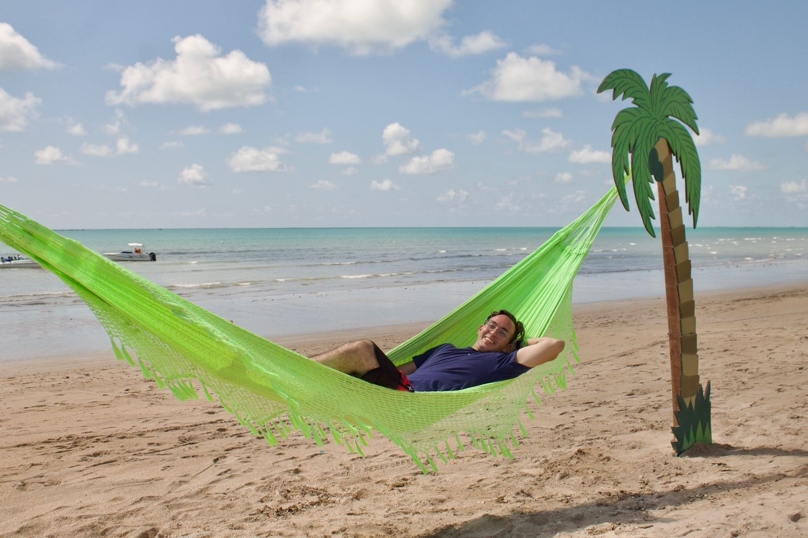

19 de Setembro de 2023
História de um Entusiasta Apaixonado por Programação

Meu Nome é Lucas Alves , Tenho 22 Anos, sou formado em : Análise e
Desenvolvimento de Sistemas , Apaixonado por Tecnológia , minha
carreira começou aos 19 anos onde a duração do meu curso teve uma
estimativa de 2 anos e 6 meses. Buscando sempre o meu aperfeiçoamento
e contribuir não so de forma individualista , mas como também
contribuir para o desenvolvimento de um time . Que precisa ter um
Líder para acompanhar de perto os processos gerênciais e tomadas de
decisões.
19 de Setembro de 2023
Jornada de Desenvolvimento Web
Para Você ter boas práticas em seus códigos e projetos desenvolvidos ,
é necessário que você tenha em mente 3 pilares para o seu
autodesenvolvimento, são eles : Foco, Persistência e Curiosidade ,
começando a criar conexões também que te influenciem e te apoiem ,
para contribuir no software , que ali estar sendo produzido
simplificando e sendo um auto didata em seu meio.
19 de Setembro de 2023
Rotinas de um Desenvolvedor
Acordar pela manhã , tomar um banho , tomar café da manhã ,
organização e planejamento em seu quarto. Fazer atividades que
contribuam para a sua parte de raciocínio e bom condicionamento físico
, contribuindo de forma positiva em seu meio social. Levando consigo
sempre uma agenda , para se atentar ao tempo e reuniões que possam
surgir ao longo do Dia-Dia nas nossas Vidas.